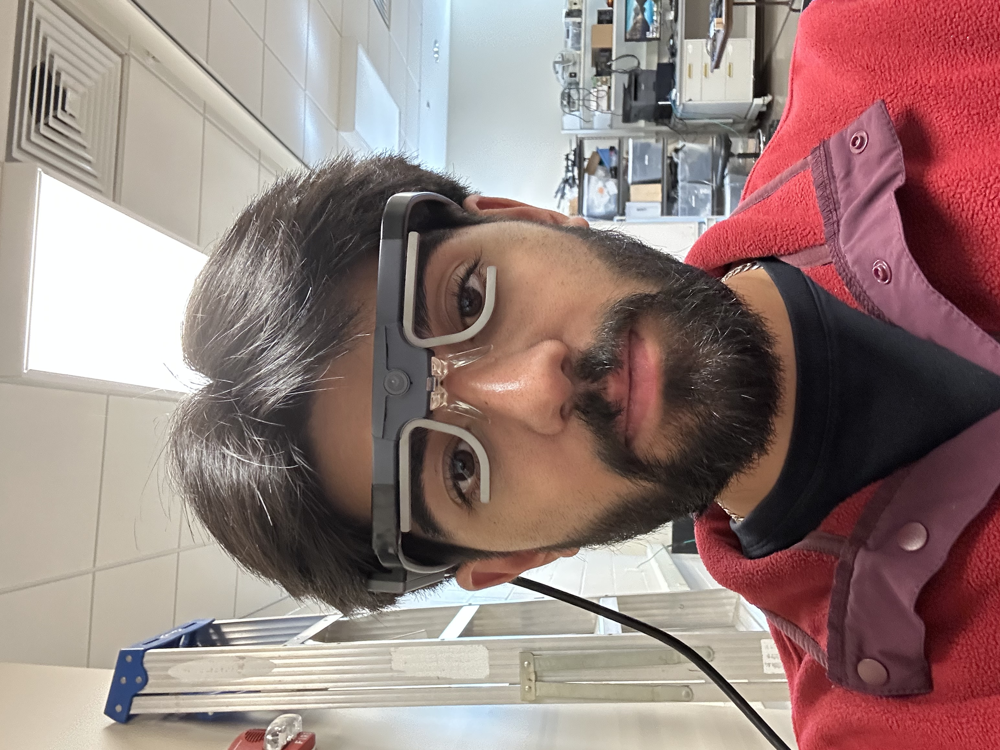
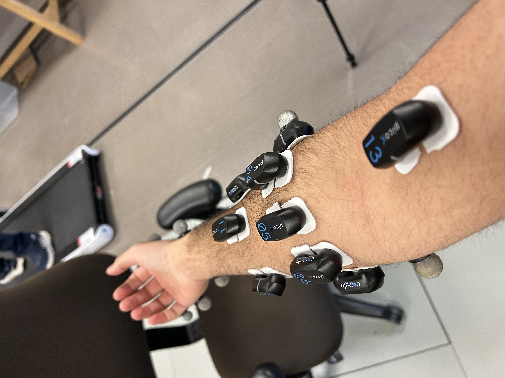

Overview
I am a research assistant at NREL assigned to the upper-limb prosthetics team where I help out with improving the efficiency of the reinforcement learning setup used to decode EMG signals.
Accomplishments
- In an effort to reduce model training times, I conducted a deep dive into the high powered computing resources at my university, the general hardware constraints of RL, and determined optimal configurations for submitting RL jobs. This resulted in substantially faster (~70%) completion of model training.
- Another way I explored the reduction of model training times is through the use of multithreading and vectorization of RL environments. Using Gymnasium, I created computationally intensive environments and compared runtimes across vectorized and non-vectorized ones to determine the suitability of parallelizing the existing RL workflows.
- Alongside being a subject myself, I assisted in data collection and processing for the 3d motion capture data which serves as a ground truth for the RL training process.
- Other tasks I've helped with include configuring the eye-tracking glasses pictured to below, volunteering at the lab's outreach events, and helping with tricky threading issues.

